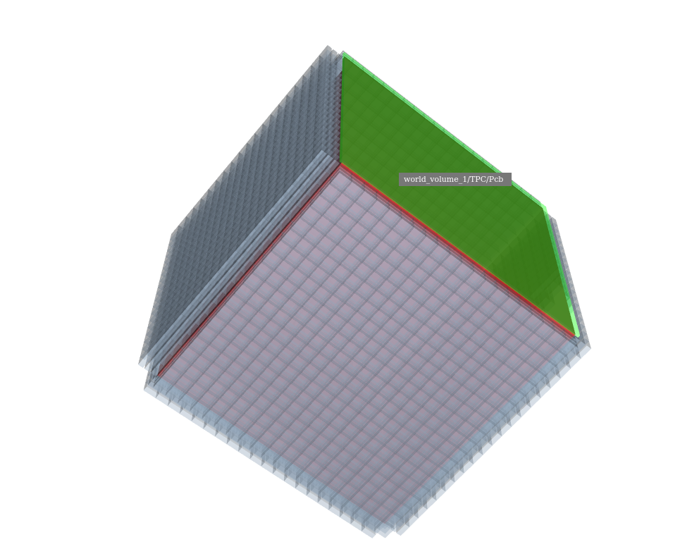
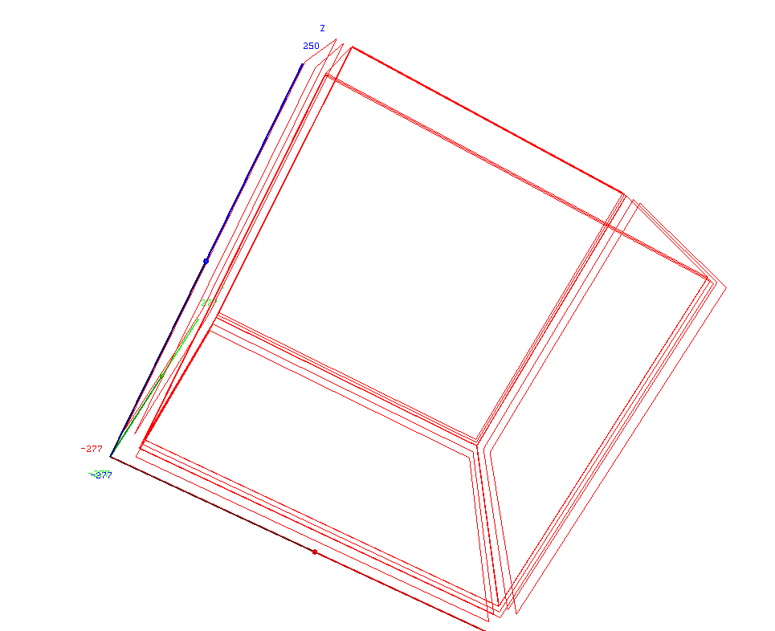
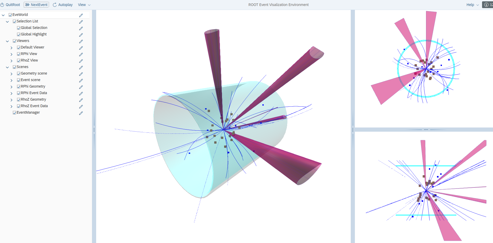
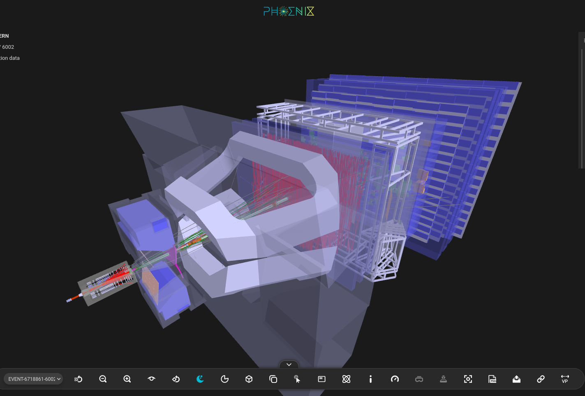
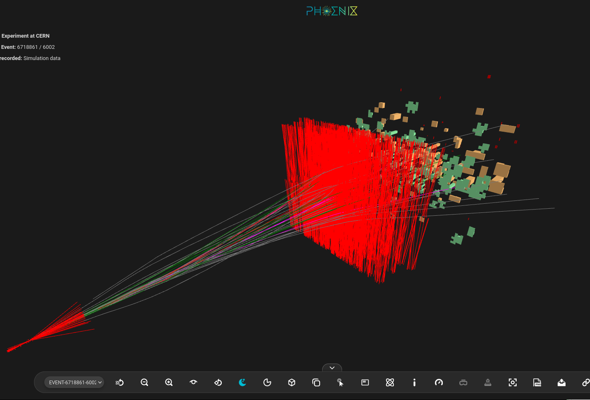

<!-- TPC subdetector specification -->
<detector id="1" name="TPC" type="Megat_SimpleTpc" readout="TpcHits" sensitive="tracker">
<!-- 1. use a tube currently, may need top and bottom -->
<envelope>
<shape type="Tube" material="TPC_gas" rmax="Vessel_Body_Rmin-0.5*mm" dz="Vessel_Body_Z/2"/>
<!-- <position x="10" y="200" z="0"/>
<rotation x="100" y="80" z="90" /> -->
</envelope>
<!-- 2. volume of drifting needs special consideration -->
<driftvol name="Gas" material="TPC_gas" vis="TpcGasVis" limits="Tpc_LimitSet">
<!-- shape and placement int -->
<shape type="Box" dx="Tpc_Drift_X/2" dy="Tpc_Drift_Y/2" dz="Tpc_Drift_Z/2"/>
<position x="0" y="0" z="Tpc_Drift_Offset"/>
<!-- <rotation x="0" y="0" z="0" /> -->
<anode_surface>
<!-- origin point and surface normal unit direction -->
<origin x="0" y="0" z="Tpc_Drift_Z/2"/>
<!-- normal direction should parallel to drift direction -->
<normal x="0" y="0" z="1"/>
</anode_surface>
</driftvol>
<!-- 3. all other components: solids, volumes, placements-->
<volume name="Pcb" material="PCB" vis="TpcPcbVis">
<shape type="Box" dx="Tpc_Pcb_X/2" dy="Tpc_Pcb_Y/2" dz="Tpc_Pcb_Z/2"/>
</volume>
<!-- ... -->
<physvol name="Pcb" element="Pcb" volume="Pcb">
<position x="0" y="0" z="Tpc_Drift_Z/2+Tpc_Drift_Offset+Tpc_Pcb_Z/2"/>
</physvol>
<!-- ... -->
</detector>
<!-- ... -->
<!-- Readout specification -->
<readout name="TpcHits">
<!-- <segmentation type="NoSegmentation"/> -->
<id>system:6</id>
</readout>
k4megat/detector/geometry/compact/TPC_v1.xml




